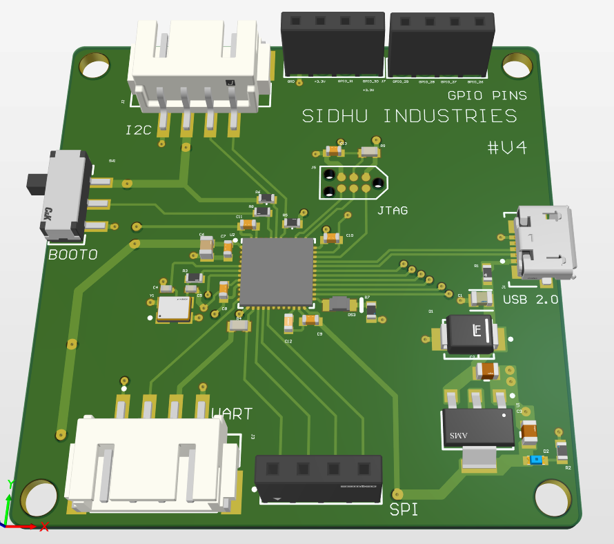
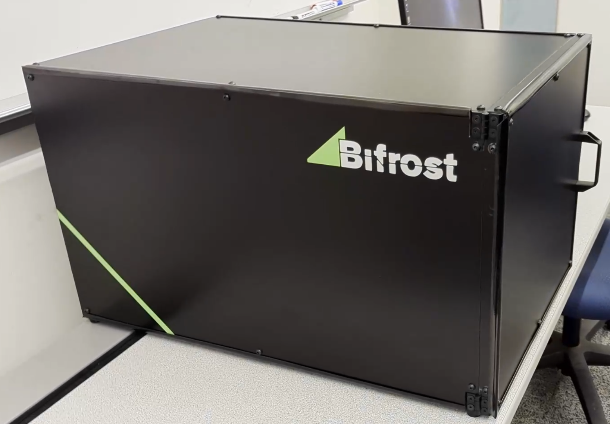

Mar 2025
Personal Project

• Designed and optimized a PCB that regulates voltage (switching circuit), with an STM32 MCU controlling both a DC motor and a motion sensor.
• Created a PCB schematic featuring filters, fuses, TVS diodes, and voltage regulators for power protection and management, along with communication protocols like UART, I2C, and SPI to enable data exchange between microcontrollers and peripheral devices.
• Developed PCB layout with impedance-controlled routing, optimized power/ground planes, and strategic component placement for signal integrity and manufacturability.
Feb 2025
Personal Project
• Designed a voltage regulator circuit in Altium Designer to step down 5V to 3.3V, providing stable power to 3.3V components and ensuring reliable system operation.
• Created a compact and efficient PCB layout for a power regulator, keeping traces short and direct to ensure stable operation.
• Employed signal integrity techniques, such as proper trace width and grounding, to ensure reliable power delivery and reduced electromagnetic interference (EMI).
• Generated Gerber files and bill of materials (BOM) to streamline the PCB fabrication and assembly process.
Jan 2024-July 2024
CAPSTONE Project


• Collaborated with a group of students to design a desktop 3D laser scanner which would address lighting issues affecting scan accuracy and precision in the existing market.
• Designed and 3D printed mechanical components such as the rotating platform, linear actuator, and laser holders using Fusion 360, which resulted in the successful assembly and functionality of a 3D laser scanner.
• Created and maintained technical documentation for proposal, requirements, design specifications, UI, testing and results.
• Managed project budget and procurement, optimizing resource use and ensuring timely acquisition of components, which supported smooth collaboration and project progression across all teams.

• Designed a two stage CMOS amplifier using different combinations of output transistors to obtain the maximum gain.
• Constructed the circuit diagram using Lt spice which created the foundation for the two-stage amplifier.
• Measured the gain of the CMOS amplifier and learnt how a compensating capacitor affects the gain in circuits.
• Designed a fully function customized UART protocol using Quartus on an FPGA board, enabling reliable parallel-to-serial data transmission.
• Created testbenches for both UART transmitter and receiver modules, enabling accurate waveform simulation and functional verification using ModelSim.
• Applied power saving practices using Quartus power tools which would monitor power consumption and optimize the design for maximum efficiency.
• Collaborated with a team of three to design and implement a Motion-Activated Streaming Camera using an embedded Linux system for integrated security and lighting functionality.
• Assembled and tested the circuit using a BeagleBone Black, relay module, motion sensor, and LEDs, ensuring proper hardware compatibility and signal routing.
• Developed C code to interface the motion sensor with the BeagleBone GPIOs, enabling the system to trigger video streaming and lighting based on detected movement.
• Designed and implemented a relay-controlled LED switch that activated when ambient light voltage dropped below 1V, providing automatic lighting under low-light conditions.

• Designed a fourth-order low-pass butterworth filter which resulted in suppressing the aliased energy getting into the digitized signal.
• Constructed the circuit diagram using Lt spice which created the foundation for the low-pass filter circuit.
• Analysed the circuit using circuit analysis techniques which resulted in passing audio ranged signals but supressing signals at higher frequencies.